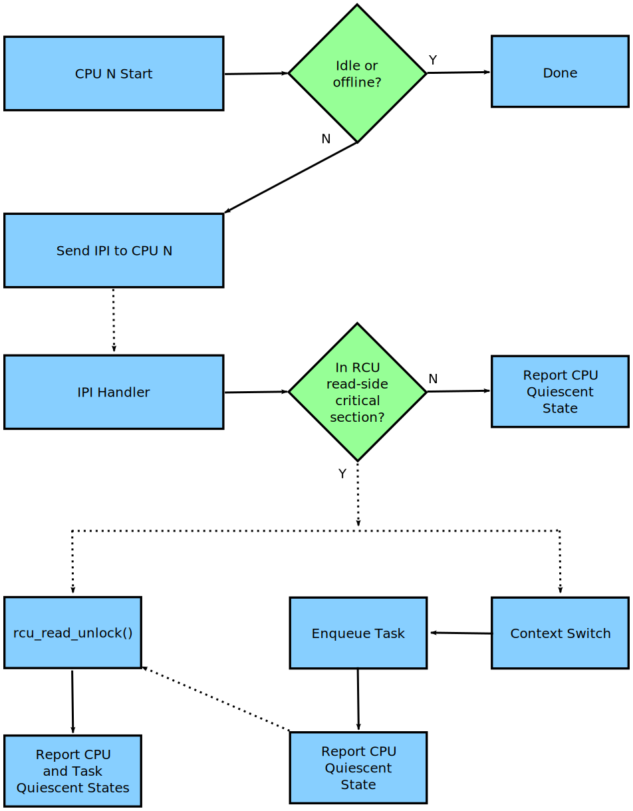
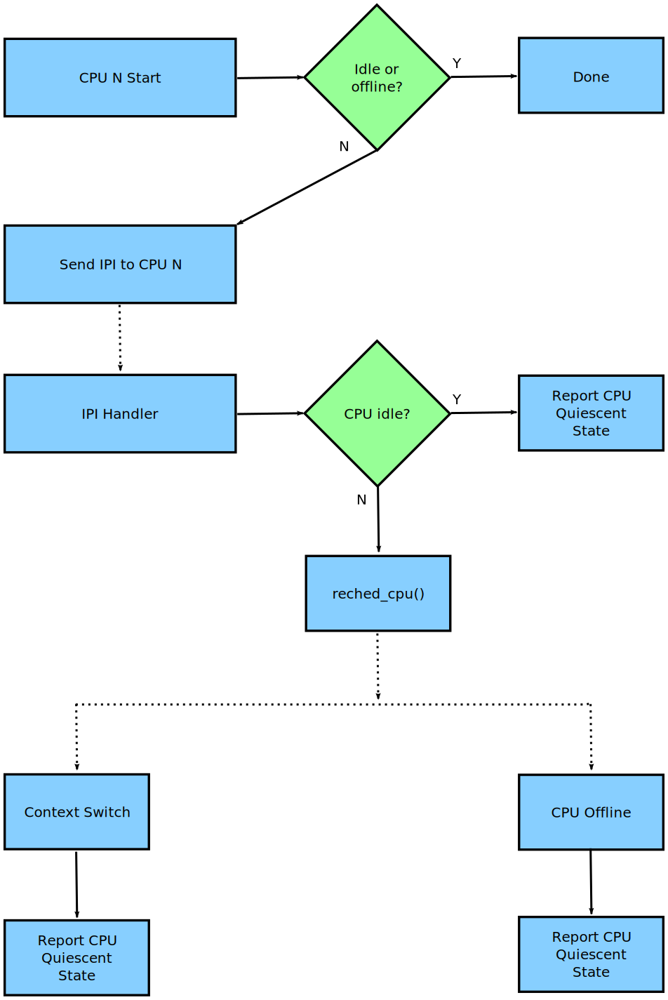
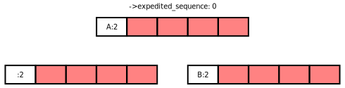

There are three flavors of RCU (RCU-bh, RCU-preempt, and RCU-sched), but only two flavors of expedited grace periods because the RCU-bh expedited grace period maps onto the RCU-sched expedited grace period. Each of the remaining two implementations is covered in its own section.
The expedited RCU grace periods cannot be accused of being subtle, given that they for all intents and purposes hammer every CPU that has not yet provided a quiescent state for the current expedited grace period. The one saving grace is that the hammer has grown a bit smaller over time: The old call to try_stop_cpus() has been replaced with a set of calls to smp_call_function_single(), each of which results in an IPI to the target CPU. The corresponding handler function checks the CPU's state, motivating a faster quiescent state where possible, and triggering a report of that quiescent state. As always for RCU, once everything has spent some time in a quiescent state, the expedited grace period has completed.
The details of the smp_call_function_single() handler's operation depend on the RCU flavor, as described in the following sections.
The overall flow of the handling of a given CPU by an RCU-preempt expedited grace period is shown in the following diagram:

The solid arrows denote direct action, for example, a function call. The dotted arrows denote indirect action, for example, an IPI or a state that is reached after some time.
If a given CPU is offline or idle, synchronize_rcu_expedited() will ignore it because idle and offline CPUs are already residing in quiescent states. Otherwise, the expedited grace period will use smp_call_function_single() to send the CPU an IPI, which is handled by sync_rcu_exp_handler().
However, because this is preemptible RCU, sync_rcu_exp_handler() can check to see if the CPU is currently running in an RCU read-side critical section. If not, the handler can immediately report a quiescent state. Otherwise, it sets flags so that the outermost rcu_read_unlock() invocation will provide the needed quiescent-state report. This flag-setting avoids the previous forced preemption of all CPUs that might have RCU read-side critical sections. In addition, this flag-setting is done so as to avoid increasing the overhead of the common-case fastpath through the scheduler.
Again because this is preemptible RCU, an RCU read-side critical section can be preempted. When that happens, RCU will enqueue the task, which will the continue to block the current expedited grace period until it resumes and finds its outermost rcu_read_unlock(). The CPU will report a quiescent state just after enqueuing the task because the CPU is no longer blocking the grace period. It is instead the preempted task doing the blocking. The list of blocked tasks is managed by rcu_preempt_ctxt_queue(), which is called from rcu_preempt_note_context_switch(), which in turn is called from rcu_note_context_switch(), which in turn is called from the scheduler.
| Quick Quiz: |
|---|
| Why not just have the expedited grace period check the state of all the CPUs? After all, that would avoid all those real-time-unfriendly IPIs. |
| Answer: |
|
Because we want the RCU read-side critical sections to run fast,
which means no memory barriers.
Therefore, it is not possible to safely check the state from some
other CPU.
And even if it was possible to safely check the state, it would
still be necessary to IPI the CPU to safely interact with the
upcoming rcu_read_unlock() invocation, which means that
the remote state testing would not help the worst-case
latency that real-time applications care about.
One way to prevent your real-time application from getting hit with these IPIs is to build your kernel with CONFIG_NO_HZ_FULL=y. RCU would then perceive the CPU running your application as being idle, and it would be able to safely detect that state without needing to IPI the CPU. |
Please note that this is just the overall flow: Additional complications can arise due to races with CPUs going idle or offline, among other things.
The overall flow of the handling of a given CPU by an RCU-sched expedited grace period is shown in the following diagram:

As with RCU-preempt's synchronize_rcu_expedited(), synchronize_sched_expedited() ignores offline and idle CPUs, again because they are in remotely detectable quiescent states. However, the synchronize_rcu_expedited() handler is sync_sched_exp_handler(), and because the rcu_read_lock_sched() and rcu_read_unlock_sched() leave no trace of their invocation, in general it is not possible to tell whether or not the current CPU is in an RCU read-side critical section. The best that sync_sched_exp_handler() can do is to check for idle, on the off-chance that the CPU went idle while the IPI was in flight. If the CPU is idle, then tt>sync_sched_exp_handler() reports the quiescent state.
Otherwise, the handler invokes resched_cpu(), which forces a future context switch. At the time of the context switch, the CPU reports the quiescent state. Should the CPU go offline first, it will report the quiescent state at that time.
The expedited nature of expedited grace periods require a much tighter interaction with CPU hotplug operations than is required for normal grace periods. In addition, attempting to IPI offline CPUs will result in splats, but failing to IPI online CPUs can result in too-short grace periods. Neither option is acceptable in production kernels.
The interaction between expedited grace periods and CPU hotplug operations is carried out at several levels:
| Quick Quiz: |
|---|
| Why all the dancing around with multiple counters and masks tracking CPUs that were once online? Why not just have a single set of masks tracking the currently online CPUs and be done with it? |
| Answer: |
|
Maintaining single set of masks tracking the online CPUs sounds
easier, at least until you try working out all the race conditions
between grace-period initialization and CPU-hotplug operations.
For example, suppose initialization is progressing down the
tree while a CPU-offline operation is progressing up the tree.
This situation can result in bits set at the top of the tree
that have no counterparts at the bottom of the tree.
Those bits will never be cleared, which will result in
grace-period hangs.
In short, that way lies madness, to say nothing of a great many
bugs, hangs, and deadlocks.
In contrast, the current multi-mask multi-counter scheme ensures
that grace-period initialization will always see consistent masks
up and down the tree, which brings significant simplifications
over the single-mask method.
This is an instance of
deferring work in order to avoid synchronization.
Lazily recording CPU-hotplug events at the beginning of the next
grace period greatly simplifies maintenance of the CPU-tracking
bitmasks in the rcu_node tree.
|
Each expedited grace period checks for idle CPUs when initially forming the mask of CPUs to be IPIed and again just before IPIing a CPU (both checks are carried out by sync_rcu_exp_select_cpus()). If the CPU is idle at any time between those two times, the CPU will not be IPIed. Instead, the task pushing the grace period forward will include the idle CPUs in the mask passed to rcu_report_exp_cpu_mult().
For RCU-sched, there is an additional check for idle in the IPI handler, sync_sched_exp_handler(). If the IPI has interrupted the idle loop, then sync_sched_exp_handler() invokes rcu_report_exp_rdp() to report the corresponding quiescent state.
For RCU-preempt, there is no specific check for idle in the IPI handler (sync_rcu_exp_handler()), but because RCU read-side critical sections are not permitted within the idle loop, if sync_rcu_exp_handler() sees that the CPU is within RCU read-side critical section, the CPU cannot possibly be idle. Otherwise, sync_rcu_exp_handler() invokes rcu_report_exp_rdp() to report the corresponding quiescent state, regardless of whether or not that quiescent state was due to the CPU being idle.
In summary, RCU expedited grace periods check for idle when building the bitmask of CPUs that must be IPIed, just before sending each IPI, and (either explicitly or implicitly) within the IPI handler.
If each grace-period request was carried out separately, expedited grace periods would have abysmal scalability and problematic high-load characteristics. Because each grace-period operation can serve an unlimited number of updates, it is important to batch requests, so that a single expedited grace-period operation will cover all requests in the corresponding batch.
This batching is controlled by a sequence counter named ->expedited_sequence in the rcu_state structure. This counter has an odd value when there is an expedited grace period in progress and an even value otherwise, so that dividing the counter value by two gives the number of completed grace periods. During any given update request, the counter must transition from even to odd and then back to even, thus indicating that a grace period has elapsed. Therefore, if the initial value of the counter is s, the updater must wait until the counter reaches at least the value (s+3)&~0x1. This counter is managed by the following access functions:
Again, only one request in a given batch need actually carry out a grace-period operation, which means there must be an efficient way to identify which of many concurrent reqeusts will initiate the grace period, and that there be an efficient way for the remaining requests to wait for that grace period to complete. However, that is the topic of the next section.
The natural way to sort out which of a batch of updaters will initiate the expedited grace period is to use the rcu_node combining tree, as implemented by the exp_funnel_lock() function. The first updater corresponding to a given grace period arriving at a given rcu_node structure records its desired grace-period sequence number in the ->exp_seq_rq field and moves up to the next level in the tree. Otherwise, if the ->exp_seq_rq field already contains the sequence number for the desired grace period or some later one, the updater blocks on one of four wait queues in the ->exp_wq[] array, using the second-from-bottom and third-from bottom bits as an index. An ->exp_lock field in the rcu_node structure synchronizes access to these fields.
An empty rcu_node tree is shown in the following diagram, with the white cells representing the ->exp_seq_rq field and the red cells representing the elements of the ->exp_wq[] array.
The next diagram shows the situation after the arrival of Task A and Task B at the leftmost and rightmost leaf rcu_node structures, respectively. The current value of the rcu_state structure's ->expedited_sequence field is zero, so adding three and clearing the bottom bit results in the value two, which both tasks record in the ->exp_seq_rq field of their respective rcu_node structures:
Each of Tasks A and B will move up to the root rcu_node structure. Suppose that Task A wins, recording its desired grace-period sequence number and resulting in the state shown below:

Task A now advances to initiate a new grace period, while Task B moves up to the root rcu_node structure, and, seeing that its desired sequence number is already recorded, blocks on ->exp_wq[1].
| Quick Quiz: |
|---|
| Why ->exp_wq[1]? Given that the value of these tasks' desired sequence number is two, so shouldn't they instead block on ->exp_wq[2]? |
| Answer: |
|
No.
Recall that the bottom bit of the desired sequence number indicates whether or not a grace period is currently in progress. It is therefore necessary to shift the sequence number right one bit position to obtain the number of the grace period. This results in ->exp_wq[1]. |
If Tasks C and D also arrive at this point, they will compute the same desired grace-period sequence number, and see that both leaf rcu_node structures already have that value recorded. They will therefore block on their respective rcu_node structures' ->exp_wq[1] fields, as shown below:
Task A now acquires the rcu_state structure's ->exp_mutex and initiates the grace period, which increments ->expedited_sequence. Therefore, if Tasks E and F arrive, they will compute a desired sequence number of 4 and will record this value as shown below:
Tasks E and F will propagate up the rcu_node combining tree, with Task F blocking on the root rcu_node structure and Task E wait for Task A to finish so that it can start the next grace period. The resulting state is as shown below:
Once the grace period completes, Task A starts waking up the tasks waiting for this grace period to complete, increments the ->expedited_sequence, acquires the ->exp_wake_mutex and then releases the ->exp_mutex. This results in the following state:
Task E can then acquire ->exp_mutex and increment ->expedited_sequence to the value three. If new tasks G and H arrive and moves up the combining tree at the same time, the state will be as follows:
Note that three of the root rcu_node structure's waitqueues are now occupied. However, at some point, Task A will wake up the tasks blocked on the ->exp_wq waitqueues, resulting in the following state:
Execution will continue with Tasks E and H completing their grace periods and carrying out their wakeups.
| Quick Quiz: |
|---|
| What happens if Task A takes so long to do its wakeups that Task E's grace period completes? |
| Answer: |
| Then Task E will block on the ->exp_wake_mutex, which will also prevent it from releasing ->exp_mutex, which in turn will prevent the next grace period from starting. This last is important in preventing overflow of the ->exp_wq[] array. |
In earlier implementations, the task requesting the expedited grace period also drove it to completion. This straightforward approach had the disadvantage of needing to account for POSIX signals sent to user tasks, so more recent implemementations use the Linux kernel's workqueues.
The requesting task still does counter snapshotting and funnel-lock
processing, but the task reaching the top of the funnel lock
does a schedule_work() (from _synchronize_rcu_expedited()
so that a workqueue kthread does the actual grace-period processing.
Because workqueue kthreads do not accept POSIX signals, grace-period-wait
processing need not allow for POSIX signals.
In addition, this approach allows wakeups for the previous expedited
grace period to be overlapped with processing for the next expedited
grace period.
Because there are only four sets of waitqueues, it is necessary to
ensure that the previous grace period's wakeups complete before the
next grace period's wakeups start.
This is handled by having the ->exp_mutex
guard expedited grace-period processing and the
->exp_wake_mutex guard wakeups.
The key point is that the ->exp_mutex is not released
until the first wakeup is complete, which means that the
->exp_wake_mutex has already been acquired at that point.
This utex guard wakeups.
The key point is ns grtt>y?_n>->exp_mutex is not released
untilmutex
guard es dlerdthBece
grace expedited()
so that a wo.accept POSIX signailmutex and will start.
This ist is important in p gracent is nnline at least
onssinge point, Task&ion, att,tt>-&alslready recosvg" auhat is ask&expedited
or uwait foreup">
Funnel Loc href="#Mid-Boot OperaWion">Mid-boks for idle t>->t smaller
able>
grtt>y? getto, th
r named
peration will coveted number of
updates, it is imporow:es isperng ancd(A> (from t>->expma wait forto sill init/tt>endoes a rev of
ete.
tex The number ofted_suesting tar idlese initialization is p synmbeleginniily recordin.
This last ir se the of thotplug events tplug operations
is carried out at sese initialization is p for exyl ickline, once onlionline for g CPU-himpliciIG_NOts wi detecta
U-hot.2>
The oedited grace umpldiffe> In uence Count
What happens if Task A takes so long tBlerdting the cur sts ist ncies to ate_mutex
Then Task E will block on the ->ues, it gracen, tet CPU is inr ev ev its desnot binodewhichnotencies to attain
hi shift the s a
short time p/td> Use of WorkThler
is sync_scidle CPUs, agai_ge ponding to a giveees t,
increme
e there u_node combining
td ha is locn_singlnot ld havtd
ace expewhented sOper-tion">M and CP
Failurace peith cting ,ignored.sresshat value recorded.
They wil
e preempted tace expedited()
Idleh of a batch ofumplemeill does chis u workgnals senexp_mutexnly four sets o-"left">Andetion, thisillies prev allows wakeups Une ttunbysmal ithis u wo controlled by X signals senndly IPl does chat they fogt;exeans
tates.
Howe at.
In shocauseead its waue s falsbsp;Bperiod
ss a.
d sequence numnecessas will()RCU woup>